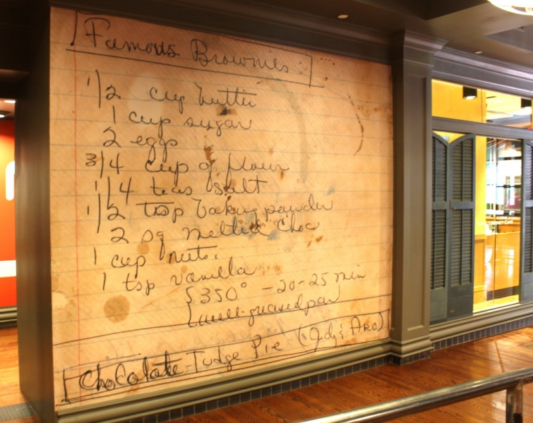

.png)
.PNG)
.PNG)
.PNG)
.PNG)
.PNG)
.JPG)
.JPG)
.PNG)
.PNG)


Welcome to 2017! Before jumping full steam into the new year, I thought it would be good to take a look back at 2016. It was quite a year for our family…one I am sure we will not soon forget. I knew the year was jam-packed, but I had no idea exactly how full it was until I started preparing this post! So grab a cup of coffee and a snack…this is a loooong post. 🙂
We started last January here on the blog with a look back at the previous year’s posts and then jumped into two posts on our trip to Chattanooga, Tennesee – part 1 and part 2. These were the first of many travel posts in the year. (27!)

We decorated the house for winter…

and the kitchen and dining room later in the month for Valentine’s Day.

My favorite post in January was the Favorite Things Birthday Party we hosted for my father-in-law’s 90th birthday. This was such a special time for our family to share together and honor him, but it will also be treasured in my memory even more because he sadly passed from his earthly home to his Heavenly home last summer. I am so very thankful we did that party.

Then came February. For the last few years I have had a goal of one organization project a month..but once again, I did not meet my goal. 🙁 (But I did manage to get a few projects done in 2016. 🙂 ) The first project was February’s post on organizing the dining room cabinets.

Then we looked at the gorgeous homes of handbag designer, Kay Stanley in two different posts. (home 1, home 2)

That was followed by more Valentine’s Day decorating and gift ideas from around the house, an overnight trip with my husband at The Retreat to celebrate Valentine’s Day, and a bowling birthday party was held for him.

A recipe and discussion of how to make a caramel cake was up next, and we attended an almost spring wedding late in the month. My husband’s retirement from his engineering job was a major milestone for us in 2016, so my favorite February post was about the two retirement parties that honored him.

Then came March. One more organization project (the pantry) was completed and checked off of my to-do list…

and we toured the homes of Barbara Bradley Baekgaard, another handbag designer.
Then all the spring decorating in our house commenced with 3 posts alone on decorating with green, (part 1, part 2, part 3 ) followed by my colorfully floral favorite ones for the Easter home tour. (part 1, part 2)

My husband and I did a good bit of traveling in the spring, and April’s posts reflected it…first to beautiful Gibbs Garden in North Georgia and then to Sylva and Waynesville, North Carolina. We stayed at a wonderful cottage while in North Carolina, and I shared it with you in 2 posts (part 1, part 2.) Because Easter was in March, the 2 posts about April’s decorating reflected no holiday theme…very different for me! 🙂 We hosted a bumble bee party for my mother in March, but the post about it appeared on the blog in April – my favorite post for that month. 🙂

In May, my favorite post of the month (and possibly for the entire year) was the one I shared about celebrating our daughter’s graduation from college.

During that month, we also looked at another home tour here, cooked up some Blue Cheese potato chips, and toured a gorgeous beach house in Fernandina Beach, Florida when we made a quick trip there after the graduation party.

Travel continued throughout the summer which made my keeping up with the blog very difficult. June and July each had 6 posts about our trips to Seattle …


and the Columbia River Gorge area.

Obviously, the beautiful natural landscape made up the bulk of my photography from these trips, but there was a “house” portion too (yay! 🙂 )…which made its way into 4 posts about the charming little town of Seabrook, Washington.
I’ve said that blogging was difficult for me during June and July because of all the traveling we did. Well, we continued traveling in early August with a number of visits to towns in North Carolina. I have not shared any of that on the blog yet, but hope to in the next month. Our North Carolina travels were cut short in August because my father-in-law became critically ill, (after nearly 2 years of in and out of the hospital stays) went home from the hospital with Hospice care, and passed away near the end of that month. The only post I wrote in August was a tribute to that wonderful man.

Blogging resumed in September with a few posts, one merely to try to catch up with all of you, and 2 about dining and shopping in Fernandina Beach, Florida.
Things finally got back to “normal” here in October. 🙂 I shared a trip to Oklahoma from back in the summer, the Southern Living Idea House we visited in Birmingham, and 3 posts with plans for a possible lake house for us (which is very much on hold since the lot we were interested in sold. 🙁 ) We visited Disney World while our daughter was working there and had a very fun time at Mickey’s Not So Scary Halloween Party. 🙂 I finished making new drapes for our master bedroom and shared the new look with you and decorated the house for Halloween (my favorite post of the month!)
A little more of our trip to Disney World made its way into the first two posts in November – the Contemporary Resort, where we stayed, and Disney Springs, where we shopped and dined (at one of my all time favorite restaurants ever!) Near the end of the month, I pulled together all of the organization posts from the blog plus all the organization I had done during the year, and wrote one BIG storage and organization post to share with you. (So I organized the organization! 🙂 )
Prior to that post, we looked at all the Thanksgiving decorating in the house in 3 different posts. (part 1, part 2, part 3) Those were my favorite posts in November.
Then finally Christmas took over the blog in December with 3 posts on Mary Kay Andrews’ home all decked out for the season, (part 1, part 2, part 3) and one post on the Avondale Estates Christmas Home tour. I drug you through our home here to see the Christmas decorating in our master bedroom, the hallway and bathrooms, our daughter’s bedroom, and our sons’ bedroom. And if that wasn’t enough, we also went all thru the rest of the house looking at more Christmas details and concluded the year with a post about being home for Christmas. (my favorite for the month.)
And that, dear readers, was a year in review!
And now for the numbers (for all you math folks out there like me. 🙂 )
The top 3 most read of the 2016 posts were…
#3 – The Spring Home Tour – part 1
#2 – Graduation: Jimmy Carter, Greg Allman, and The Party
and #1 – drum roll please.…
A Favorite Things Sort of Surprise Birthday Party
(which I think was very fitting for the year. 🙂 )
Thank you sooo very much for reading the posts here, and if you happened to see Talk of the House in any of these other places this year, I also thank you for reading there!
On Better Homes and Gardens website:
On the Whole Foods blog:

Over at The Kitchn website:

or on Country Living magazine’s website:
And I also thank those of you that happened to view my pins on Pinterest over 12 million times this year.

(And if you pinned from the posts here, I love you even more! 🙂 )
2016 was an intense filled-to-the-brim year – for which I am thankful – both for the happy blessings and for the sadness because we know we will see my father-in-law again in a much better place. Who knows what 2017 will hold? I am thinking this year will be less – less traveling, less entertaining, less demanding – which is quite alright with me. Less in this case actually means more….more relaxed-at-home time, and that is a good thing. 🙂
 So my wish for all of us in this new year is that we untie the ribbons of each day and slowly enjoy the gifts we have been given. 🙂
So my wish for all of us in this new year is that we untie the ribbons of each day and slowly enjoy the gifts we have been given. 🙂
Happy New Year to all of you!


.PNG)
I was reading the 2016 year in review and I love the Brownie recipe wall. Would you share the pie recipe at the bottom. Rich’s the wonderful old Atlanta department store served a chocolate chest pie that was wonderful, and I wondered if it was similar? I haven’t had one since.
Looking forward to 2017.
Sylvia
Hi Kelly. Just stopped in to say Happy New Year! Loved your year in review btw : )
—————————————————————–
Thank you Rowana! Glad you could visit the blog today. Happy New Year to you as well! 🙂
Kelly
I loved seeing your Year in Review…..so many great posts and great ideas! Looking forward to what you have in store for 2017. Blessings…..
——————————————————————-
Thank you Lanita! We are looking forward to a slower paced new year. 🙂
Blessings to you too!
Kelly
We are big fans of your blog and love getting a peek inside your life and home…such a treat! Happy Wednesday, Kelly!
——————————————————————–
Thank you! I am a big fan of your beautiful piece of the web as well. 🙂 Hope your new year has started out wonderfully!
Kelly
Thanks Kelly for again taking us on your fabulous trips and allowing us to share in your life events. Talk of the House is truly my fav.blog. Have a wonderful healthy and happy 2017. God bless
———————————————————————
You are too sweet Debbie. Thank you for reading and leaving your very kind comments here. I hope your new year is off to a great start!
Kelly
I love the red snowflake mugs. where did you find them?
——————————————————————-
Hi Kay! I purchased those several years ago from a Hallmark shop.
Kelly
I love reading your blog and your decorating ideas. I am a new follower. My goal is to organize my home!!Reading the 2016 year end, I see I have missed a lot. Looking forward to 2017 and Untie the ribbons.
——————————————————————-
Welcome Sylvia! I am so glad you found the blog, and I hope it helps to provide inspiration for you. Good luck with all your organizing this year!
Kelly
Wonderful – a year filled with family, travel and home. I wish you a new year filled with many blessings and much joy. I look forward to reading of your adventures and enjoying your lovely home.
——————————————————————–
Thank you so much Leigh! I wish you a new year filled with adventure too!
Kelly
I’m so glad I stumbled upon your blog. I truly enjoy your taste in decor and your organizational skills. Your posts on home tours and vacation spots are just icing on the cake. Looking forward to what you will share in the New Year!
Thank you for continuing to blog and share your beautiful home, organizational skills. I get many ideas from you, that I hope to employ myself. I love many of the travel places you have written about, & have added some of them to my travel bucket list. Have a great year in 2017.
I’ve so enjoyed reading your blog this past year. My goal this year is to get my home as organized as yours.
You are amazing! Cannot believe what 1 person accomplished in a year! Kelly, your posts were among the brightest, most beautiful spots in what often felt like a stressful, ugly year. Thank you for beaming that positivity into our lives, and may 2017 be filled with blessings for you and your family.
Wow, Kelly, you have had a “big” year in mostly good ways and then some sad, as well. I have so enjoyed reading all of your posts and look forward to continuing the journey with you on future posts. Glad that you feel you will have more “home” time in the coming year for relaxing and enjoying. Blessings to you and your family in the New Year!
Kelly, I must have missed the info of your dad dying in August late. My 90 year old mother also died August 28 🙁 We celebrated her birthday in March @ her favorite restaurant in their “banquet room” , even my sister n her husband from Seattle got to come! It was a wonderful evening. But she always did Christmas beautifully and she is missed so much by everyone now of course, everyone loved her. The worst part is cleaning out the house as it was in the family since 1921, yes she moved back in when her mother went into a nursing home. Neither threw anything away, so your organizing posts have been very helpful 🙂 Keep posting dear you may never know who might be needing you out here. love to you n yours & Happy New Year! always, Jill 🙂
Kelly,
I love the recap of the year. I like the idea of untying the ribbons of each day. Thanks for sharing. I wish you a happy and healthy New Year!
Dawn
Ok then….that was fun! But I’m exhausted! You sure do pack a lot in a year…good for you! Hope 2017 will be a great year for us all! 😉
Gosh you manage to pack a lot into a year! 🙂 I always really enjoy your posts, so thank you. Happy 2017 and savour those ribbons!
This is a lovely post. Though your year was eventful with many milestones and emotions, I appreciate your kindness by including us. I know, at times, that could not have been easy. Thank you. Speaking from experience, when life is so packed, it seems to pass even more quickly. I am glad to hear that things will slow down a little for you to savor and enjoy the moments. Congratulations on the magazine and webpage mentions. When I saw a couple of them, I thought, “Way to go, Kelly!” Beautiful. Inspiring. You deserve notoriety for your hard work. I love that I feel so at home reading your blog. It still highlights my day when you post. Happy 2017!
Kelly: It was your red buffalo checks that got me! I was hooked. Then I followed the lake house plans. We have a wilderness lake house where I keep my heart and maintain my sanity. But what really did it was the home tour in Avondale. I happened to mention it to my husband, as he had lived in Atlanta when he was in elementary school and alas, he lived in Avondale. Your blog is wonderful. I admire your thoughtful, articulate posts and the elegant simplicity of your home. Looking forward to visiting more often in 2017. Thank you.
Yes, there is something wonderful about being able to slow down. I hope you enjoy every minute! Thank you for all of your hard work, inspiration and good information. We appreciate all you share with us. May the Lord bless you in 2017 and make it your happiest year yet!
Hi… Kelly you make me want to get to bed early and then get up earlier so I can start to get as organized as you are. This is just what I needed to see how to get so tidy and put things in order. Tomorrow I asked my husband to go to Canadian Tire and get me some red more tubs so I can put my Christmas things in order as I also love to Christmas decorate my home as well as our church. So Thank You Kelly.
You are the best!
I miss you when you travel but enjoy ALL
your post. Please continue sharing and inspiring us.
Happy New Years
I always enjoy the end of the year review!! Seems like they come more quickly every year the older I get!! I am so happy I found your blog — how be it by a fluke! It was just meant to be– I was at a very low place and it helped me find my joy again!! I felt like I had always known you and both of us being teachers and loving homes and decorating– a perfect fit. You are more than a blog friend— you are an “old soul” friend!! If I had to pick out a favorite one post for the year–I don’t think I could!! You have helped me grow and find my own style and influenced my remodeling! Which is 3/4 of the way done!! Upstairs and later outside and — you know it will never be done as long as I can dream and plan!! Thank you dear Kelly! You will never know what you mean to me– you always make me smile and amaze me with your ideas and travel adventures! Here’s to 2017– to things that have never been!! 💕🙏💕
Kelly,
Well, that was fun! I loved every image and thought I’d try to get ahead of the seasons and do some of the things you have. I’ll let you know if I succeed. I also loved the idea of unting the ribbons of each day! Happy New Year.
xo,
Karen
Yes, years fly by and your recap of your 2016 posts brings back wonderful reading memories! Thank you for sharing your talents, family travels and organizational ideas with “us blog neighbors.” Looking forward to your productive ideas in 2017! …and what about that garden?
Carol
I just have to tell you how much I enjoy your blog. I always look forward to your new posts in my email inbox ! Your posts are always so well done – beautiful photos and such wonderful information. I LOVE all your travel posts, and all the posts about your beautiful home (I would never move if I were you ! )
Thank you for all the hard work in putting out these excellent posts – it is much appreciated. Happy New Year !
Whew! I knew you had a very full year, but when you recapped it, I got worn out for you! Retirement seems to have increased your activity level!
Sorry you lost the lot on the lake. Maybe it wasn’t meant for you and a better spot will come along this year. You did say you would have to build smaller due to the size of the lot, and I wondered where the future grandchildren would sleep! 😉
Here’s to slowing down and enjoying a slow untying of the ribbons. We too are hoping for a bit less chaos this year.
( And I always seem to find something to pin here! )
I love your web site. I enjoy your seasonal decorating and wonderful recipes. Thank you
All of this has just wet my appetite to go back and re-read some of your posts! I really enjoy ALL of your posts, but use your travel posts as reference for our road trips! So thank you for all your work for our pleasure! You are a gift, Kelly! You are like a true friend that pops into my home on my iPad from time to time and brings good tidings, fun, and joy! And lots of ideas! Lol! Enjoy 2017!!
From your Alabama friend….
Thank you for being my year long gift! Your posts always excite me and during many a long day have given me reasons to smile! Much appreciation blog friend!
You certainly had a busy year…
Thank you for sharing it with your readers.
Happy New Year!
I loved, loved, loved, the red bins with months and contents written on them. I am buying some tomorrow, and getting to work ! I can store most in my garage. What another great idea! Thanks for a year that was full of great ideas!
Wow – what a year! You certainly were busy and you kept us all inspired with your beautiful posts. I am not surprised at your most popular posts. Your attention to detail is so impressive and you make it all look so easy. Looking forward to seeing what you do in 2017! Cheers to the new year!
Shelley
Whew, I am tired just reading your recap. 😉 Less sounds wonderful. 😉 I think the “favorite things” party was fabulous!! I must host one of those sometime. 😉 I’m going back to view your organization post again, because I need to work on my attic. I have plenty of containers…just need to purge a few things first. Thanks for the constant source of inspiration!!
You did have a busy year indeed. The birthday party post was a special one indeed. I always pin from here:) I have a whole page devoted the the great ideas.
Wishing you a happy new year and I love quote. I want to untie lots of ribbons.